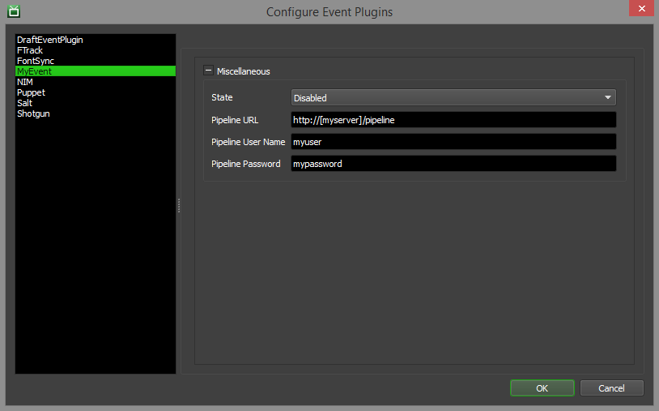

Event Plugins¶
Overview¶
Event plugins can be created to execute specific tasks in response to specific events in Deadline (like when a job is submitted or when it finishes). For example, event plugins can be used to communicate with in-house pipeline tools to update the state of shots or tasks, or they can be used to submit a post-processing job when another job finishes. All of Deadline’s event plugins are written in Python, which means that it’s easy to create your own plugins or customize the existing ones. See the Scripting Overview documentation for more information, and links to the Deadline Scripting reference.
Note that because the Python scripts for event plugins will be executed in a non-interactive way, it is important that your scripts do not contain any blocking operations like infinite loops, or interfaces that require user input.
When an event is executed the log will show where the script is being loaded from.
Triggering Events¶
An event plugin can respond to one or more of the following DeadlineEventListener events:
When a Job is submitted
OnJobSubmittedCallbackWhen a Job is imported
OnJobImportedCallbackWhen a Job starts rendering
OnJobStartedCallbackWhen a Job finishes rendering
OnJobFinishedCallbackWhen a Job is requeued
OnJobRequeuedCallbackWhen a Job fails
OnJobFailedCallbackWhen a Job is suspended
OnJobSuspendedCallbackWhen a suspended or failed Job is resumed
OnJobResumedCallbackWhen a Job is placed in the pending state
OnJobPendedCallbackWhen a Job is released from a pending state
OnJobReleasedCallbackWhen a Job is deleted
OnJobDeletedCallbackWhen a Job error occurs during rendering
OnJobErrorCallbackWhen a Job is about to be purged from the database
OnJobPurgedCallback
When a house cleaning operation finishes
OnHouseCleaningCallbackWhen a repository repair operation finishes
OnRepositoryRepairCallback
When a Worker starts
OnSlaveStartedCallbackWhen a Worker stops
OnSlaveStoppedCallbackWhen a Worker becomes idle
OnSlaveIdleCallbackWhen a Worker starts rendering
OnSlaveRenderingCallbackWhen a Worker starts a Job
OnSlaveStartingJobCallbackWhen a Worker is marked as stalled
OnSlaveStalledCallbackWhen a Worker updates its information in the database
OnSlaveInfoUpdatedCallback
When power management’s Idle Shutdown feature shuts down Workers
OnIdleShutdownCallbackWhen power management’s Machine Startup feature starts up Workers
OnMachineStartupCallbackWhen power management’s Thermal Shutdown feature shuts down Workers
OnThermalShutdownCallbackWhen power management’s Machine Restart feature restarts Workers
OnMachineRestartCallback
The corresponding Event Callbacks for these events can be found in the ‘Deadline.Events.DeadlineEventListener Class Reference’ section of the Deadline Scripting Reference documentation. The full Deadline Scripting Reference can be found on the Thinkbox Software Documentation Website. Offline PDF and HTML versions can be downloaded from here as well.
More detailed information about event callbacks can be found in the Event Callback Details section further down.
By default, all jobs will trigger event plugins when they are submitted or change state. However, there is a job property that can be enabled to suppress events. In the Monitor, you can set the Suppress Events property under the Advanced tab in the Job Properties dialog. If you have a custom submission tool or script, you can specify the following in the job info file:
SuppressEvents=True
Note that events will be executed by different Deadline applications, depending on the context of the event. For example, the job submission event is processed by the Command application after the job has been submitted, while the job finished event is normally processed by the Worker that finishes the last task for the job. However, the job finished event could also be processed by the Monitor if manually marking a job as complete.
The order in which Event plugins trigger is also configurable: the plugins will be executed in the order they appear in the Configure Event Plugins window. The order can be modified by selecting a plugin name and moving it up or down in the list.

Creating an Event Plugin¶
To create a custom event plugin, you start by creating a folder in the Repository’s custom\events folder and give it the name of your event plugin. See the Scripting Overview documentation for more information on the ‘custom’ folder in the Repository and how it’s used.
For the sake of this document, we will call our new event plugin MyEvent. All relative script and configuration files for this event plugin are to be placed in this folder (some are required and some are optional).
.py File¶
Required
The MyEvent.py is the main event plugin script file. It defines the main DeadlineEventListener class that contains the necessary callbacks that will respond to specific events. The template for this script file might look like this:
from Deadline.Events import DeadlineEventListener
def GetDeadlineEventListener():
"""This is the function that Deadline calls to get an instance of the
main DeadlineEventListener class.
"""
return MyEvent()
def CleanupDeadlineEventListener(deadlinePlugin):
"""This is the function that Deadline calls when the event plugin is
no longer in use so that it can get cleaned up.
"""
deadlinePlugin.Cleanup()
class MyEvent(DeadlineEventListener):
"""This is the main DeadlineEventListener class for MyEvent"""
# TODO: Place code here to replace "pass"
pass
The first thing to note is that we’re importing the Deadline.Events namespace so that we can access the DeadlineEventListener class.
The GetDeadlineEventListener() function is important, as it allows Deadline to get an instance of our MyEvent class (which is extending the abstract DeadlineEventListener class). If this function is not defined, Deadline will report an error when it tries to load the event plugin.
The __init__() function in each event plugin must call super().__init__() (ie. the super class constructor) before doing anything else as of Deadline 10.3.
The MyEvent class will need to implement certain callbacks based on the events you want to respond to, and these callbacks must be hooked up in the MyEvent constructor. All callbacks are optional, but make sure to include at least one so that your event plugin actually does something. For a list of all available callbacks, refer to the DeadlineEventListener class in the Deadline Scripting reference.
The CleanupDeadlineEventListener() function is also important, as it is necessary to clean up the event plugin when it is no longer in use. Typically, this is used to clean up any callbacks that were created when the event plugin was initialized.
After implementing a few functions, your MyEvent.py script file might look something like this:
from Deadline.Events import DeadlineEventListener
def GetDeadlineEventListener():
"""This is the function that Deadline calls to get an instance of the
main DeadlineEventListener class.
"""
return MyEvent()
def CleanupDeadlineEventListener(deadlinePlugin):
"""This is the function that Deadline calls when the event plugin is
no longer in use so that it can get cleaned up.
"""
deadlinePlugin.Cleanup()
class MyEvent(DeadlineEventListener):
"""This is the main DeadlineEventListener class for MyEvent"""
def __init__(self):
# Set up the event callbacks here
super().__init__() # Required in Deadline 10.3 and later.
self.OnJobSubmittedCallback += self.OnJobSubmitted
self.OnJobFinishedCallback += self.OnJobFinished
def Cleanup(self):
del self.OnJobSubmittedCallback
del self.OnJobFinishedCallback
def OnJobSubmitted(self, job):
# TODO: Connect to pipeline site to notify it that a job has been submitted
# for a particular shot or task.
pass
def OnJobFinished(self, job):
# TODO: Connect to pipeline site to notify it that the job for a particular
# shot or task is complete.
pass
.param File¶
Required
As of Deadline 8.0 the param file is required and effectively replaces the *.dlinit file (which is no longer used). The data that was previously stored in the *.dlinit file is now stored in the database. The *.param file is used by the Event Configuration dialog in the Monitor. It declares properties that the Monitor uses to generate a user interface for modifying custom settings in the database. After you’ve created this file, open the Monitor and enter Power User mode. Then select Tools -> Configure Events and look for your event plugin in the list on the left.
The file might look something like:
[State]
Type=Enum
Items=Global Enabled;Opt-In;Disabled
Label=State
Default=Disabled
Description=How this event plugin should respond to events. If Global, all jobs and Workers will trigger the events for this plugin. If Opt-In, jobs and Workers can choose to trigger the events for this plugin. If Disabled, no events are triggered for this plugin.
[PipelineURL]
Type=string
Label=Pipeline URL
Default=http://[myserver]/pipeline
Description=The URL for our pipeline website.
[PipelineUserName]
Type=string
Label=Pipeline User Name
Default=
Description=The user name for our pipeline website.
[PipelinePassword]
Type=password
Label=Pipeline Password
Default=
Description=The password for our pipeline website.
Event Plugins require the [State] property to be declared as of Deadline 8.0, and this property replaces the [Enabled] property from earlier versions. Attempting to use an event plugin from an earlier version of Deadline without editing it to declare this new property will prevent the event from functioning correctly.
Comment lines are supported in the param file, and must start with either ‘;’ or ‘#’. For example:
# This is a comment about this PipelineURL property.
[PipelineURL]
Type=string
Label=Pipeline URL
Default=http://[myserver]/pipeline
Description=The URL for our pipeline website.
The available key=value pairs for the properties defined here are:
Key Name |
Description |
|---|---|
Category |
The category the control should go under. |
CategoryIndex |
This determines the control’s order under its category. This does the same thing as Index. |
CategoryOrder |
This determines the category’s order among other categories. If more than one CategoryOrder is defined for the same category, the lowest value is used. |
Default |
The default value to be used if this property is not defined in the database. This does the same thing as DefaultValue. |
DefaultValue |
The default value to be used if this property is not defined in the database. This does the same thing as Default. |
Description |
A short description of the property the control is for (displayed as a tooltip in the UI). |
DisableIfBlank |
If True, a control will not be shown if this property is not defined in the param/options file (True/False). This does the same thing as IgnoreIfBlank. |
IgnoreIfBlank |
If True, a control will not be shown if this property is not defined in the param/options file (True/False). This does the same thing as DisableIfBlank. |
Index |
This determines the control’s order under its category. This does the same thing as CategoryIndex. |
Label |
The control label. |
Required |
If True, a control will be shown for this property even if it’s not defined in the database (True/False). |
Type |
The type of control (see table below). |
IsServerData |
Whether or not the value of this section should be stored as server data. |
These are the available controls.
Control Type |
Description |
|---|---|
Boolean |
A drop-down control that allows the selection of True or False. |
Color |
Allows the selection of a color. |
Enum |
A drop-down control that allows the selection of an item from a list. |
Enumeration |
Same as Enum above. |
Filename |
Allows the selection of an existing file. |
FilenameSave |
Allows the selection of a new or existing file. |
Float |
An floating point spinner control. |
Folder |
Allows the selection of an existing folder. |
Integer |
An integer spinner control. |
Label |
A read-only text field. |
MultiFilename |
Allows the selection of multiple existing files, which are then separated by semicolons in the text field. |
MultiLineMultiFilename |
Allows the selection of multiple existing files, which are then placed on multiple lines in the text field. |
MultiLineMultiFolder |
Allows the selection of multiple existing folders, which are then placed on multiple lines in the text field. |
MultiLineString |
A text field with multiple lines. |
Password |
A text field that masks the text. If using the Deadline Secrets Management feature, any parameter with the Control Type of Password will be saved and retrieved based on the Event Plugins Secrets Access Level. |
SlaveList |
Allows the selection of existing Workers, when are then separated by commas in the text field. |
String |
A text field. |
There are also key/value pairs for specific controls:
Key Name |
Description |
|---|---|
DecimalPlaces |
The number of decimal places for the Float controls. |
Filter |
The filter string for the Color, Filename, FilenameSave, or MultiFilename controls. Examples: |
Increment |
The value to increment the Integer or Float controls by. |
Items |
The semicolon separated list of items for the Enum control. This does the same thing as Values. |
Maximum |
The maximum value for the Integer or Float controls. |
Minimum |
The minimum value for the Integer or Float controls. |
Validator |
A regular expression for the String control that is used to ensure the value is valid. Examples: |
Values |
The semicolon separated list of items for the Enum control. This does the same thing as Items. |
Server Data¶
When an item is marked as server data, it is stored differently than other data. The purpose of this is to reduce data transfer in cases where a lot of data needs to be stored as configuration data, but needs to be accessed less frequently than the rest of the config.
In this case the data can be retrieved as follows:
1) Call var myServerData = RepositoryUtils.GetServerData("event.plugin.mypluginname") (ex. event.plugin.spot)
2) Call myServerData["sectionname"] (ex. Config)
Event Plugin and Error Reports¶
Logs and reports can be stored with the job or the Worker, depending on the event type.
Job Event Reports¶
Event types that start with “OnJob…” will save reports with the corresponding job.
When an event plugin that uses the LogInfo or LogWarning functions finishes executing, its log will be stored with the job’s other render logs, which you can view in the Monitor by right-clicking on the job and selecting View Job Reports.
When an error occurs in an event-plugin, an error report will also be stored with the job’s other render errors, which you can view in the Monitor by right-clicking on the job and selecting View Job Reports.
Slave Event Reports¶
Event types that start with “OnSlave…” will save reports with the corresponding Worker.
When an event plugin that uses the LogInfo or LogWarning functions finishes executing, its log will be stored with the Worker’s other render logs, which you can view in the Monitor by right-clicking on the Worker and selecting View Worker Reports.
When an error occurs in an event-plugin, an error report will also be stored with the Worker’s other render errors, which you can view in the Monitor by right-clicking on the Worker and selecting View Worker Reports.
Quicktime Generation Example¶
An event plugin can be used to automatically submit a Quicktime job to create a movie from the rendered images of a job that just finished. An example of an event plugin like this can be downloaded from the Miscellaneous Deadline Downloads Page. To install the event plugin, just unzip the downloaded file to your Repository’s custom/events folder.
Configuration Files
The QuicktimeGen.param file defines a couple of settings that can be configured from the Monitor. Here you can specify a path to the Quicktime settings XML file you want to use. This settings file can be generated from the Submit Quicktime Job To Deadline submitter in the Monitor.
The QuicktimeGen.param file:
[State]
Type=Enum
Items=Global Enabled;Opt-In;Disabled
Label=State
Default=Global Enabled
Description=How this event plugin should respond to events. If Global, all jobs and Workers will trigger the events for this plugin. If Opt-In, jobs and Workers can choose to trigger the events for this plugin. If Disabled, no events are triggered for this plugin.
[EventCallbacks]
Type=Label
Description=The Event Callbacks that this Event Plugin subscribes to.
Default=OnJobFinished
[QTSettings]
Type=filename
Label=QT Settings XML File
Default=
Description=The QT settings xml file.
Cron / Scheduled Event¶
A ‘regular time interval’ based event plugin can be called via listening for the House Cleaning event in Deadline to be completed. This is ideal for the execution of a Deadline event plugin, at a regular time interval when the Deadline database is as up to date as possible. The time interval of the House Cleaning operation is controlled in the repository options.
Deadline provides the possibility of integration with IT monitoring systems such as Zabbix, Zenoss, Nagios, Opennms, SolarWinds or indeed any other monitoring software via the house cleaning event callback. As an example, this event could be used to regularly inject Deadline data based on it’s job, Worker, Pulse statistics or info/settings into another database thereby providing integration and consistency between separate information systems in different departments in a company.
Building your own scheduled event script file might look something like this:
from Deadline.Events import DeadlineEventListener
def GetDeadlineEventListener():
"""This is the function that Deadline calls to get an instance of the
main DeadlineEventListener class.
"""
return ScheduledEvent()
def CleanupDeadlineEventListener(deadlinePlugin):
"""This is the function that Deadline calls when the event plugin is
no longer in use so that it can get cleaned up.
"""
deadlinePlugin.Cleanup()
class ScheduledEvent (DeadlineEventListener):
"""This is the main DeadlineEventListener class for ScheduledEvent."""
def __init__(self):
# Set up the event callbacks here
super().__init__() # Required in Deadline 10.3 and later.
self.OnHouseCleaningCallback += self.OnHouseCleaning
def Cleanup(self):
del self.OnHouseCleaningCallback
def OnHouseCleaning(self):
# TODO: Execute generic pipeline duties here such as
# reporting to an external studio database or injecting
# Deadline Farm Stats into Zabbix, Zenoss, Nagios for IT
pass
Software Configuration Management Integration¶


Deadline provides the possibility of integration with Software Configuration Management (SCM) systems such as CFEngine, Puppet, Saltstack, Chef, Ansible, SCCM, ARD, Casper Suite, Munki or indeed any SCM software via the Worker event callbacks. Deadline ships with Puppet and Salt Maintenance Jobs which can be submitted to Deadline via their Monitor submission scripts and also via Puppet and Salt Worker centric event plugins.
Building your own SCM event plugin might look something like this:
from Deadline.Events import DeadlineEventListener
from Deadline.Scripting import ClientUtils
def GetDeadlineEventListener():
"""This is the function that Deadline calls to get an instance of the
main DeadlineEventListener class.
"""
return SoftwareEvent()
def CleanupDeadlineEventListener(deadlinePlugin):
"""This is the function that Deadline calls when the event plugin is
no longer in use so that it can get cleaned up.
"""
deadlinePlugin.Cleanup()
class SoftwareEvent(DeadlineEventListener):
"""This is the main DeadlineEventListener class for SoftwareEvent."""
def __init__(self):
# Set up the event callbacks here
super().__init__() # Required in Deadline 10.3 and later.
self.OnSlaveStartedCallback += self.OnSlaveStarted
self.OnSlaveStartingJobCallback += self.OnSlaveStartingJob
def Cleanup(self):
del self.OnSlaveStartedCallback
del self.OnSlaveStartingJobCallback
# This is called when a Worker is started.
def OnSlaveStarted(self, string):
# If a Worker has just started on a rendernode,
# this can typically be a reliable and safe time
# to carry out config/software deployment.
self.SoftwareUpdate()
# This is called when a Worker starts a job.
def OnSlaveStartingJob(self, string, job):
# You could query the returned job object when a
# Worker first starts a job. Correct version of
# renderer installed?
self.SoftwareUpdate()
def SoftwareUpdate(self):
ClientUtils.LogText("Preparing for Software Update")
# TODO: Execute command here to query your in-house
# software deployment tool (SCM) to see if any new
# software/sys env variables are required to be updated.
pass
Event Callback Details¶
The following section contains information about when each event callback is triggered, and which Deadline application(s) are responsible for invoking the event callback.
Job Event Callbacks¶
|
When: This callback is invoked just before a Job is flagged as submitted in the database. By: The application that submitted the Job (Deadline Monitor or Deadline Command) is responsible for invoking the event callback. |
|
When: This callback is invoked just before a Job is flagged as submitted in the database when it has been imported from an archive. By: The application that submitted the Job (Deadline Monitor or Deadline Command) is responsible for invoking the event callback. |
|
When: This callback is invoked after a Job has been dequeued by the Worker for rendering but before the Job’s application plugin has been invoked. Requeued Jobs do not trigger the invocation of this event callback. By: The Deadline Worker application is responsible for invoking the event callback. |
|
When: This callback is invoked after the last Task in a Job is completed, or after the Job is manually changed to complete. By: The application that marks the Job completed (Worker, Monitor, or Command) is responsible for invoking the event callback. |
|
When: This callback is invoked immediately after a Job is deleted. By: The application that issues the deletion of the Job is responsible for invoking the event callback. |
|
When: This callback is invoked immediately after a Job is requeued. By: The application that requeued the Job is responsible for invoking the event. |
|
When: This callback is invoked immediately after a Job is suspended. By: The application that issues the Job to be suspended is responsible for invoking the event callback. |
|
When: This callback is invoked immediately after a Job is resumed. By: The application that issues the Job to be resumed is responsible for invoking the event callback. |
|
When: This callback is invoked immediately after a Job has failed. By: The application that issues the Job to fail is responsible for invoking the event callback. |
|
When: This callback is invoked immediately after an error is reported. This occurs before the Job would be marked as failed, and before the Worker reports an error in the rendering step. By: The Deadline Worker application is responsible for invoking the event callback. |
|
When: This callback is invoked immediately before a Job is purged. This occurs during the house cleaning step. By: The application running house cleaning (Worker, Pulse, Monitor, Command) is responsible for invoking the event callback. |
|
When: This callback is invoked immediately after a Job has been pended. By: When a Job is pended manually, the Deadline Monitor application is responsible for invoking the event callback. When a Job is pended automatically, the application running the “Pending Job Scan” is responsible for invoking the event callback. |
|
When: This callback is invoked immediately after a Job has been released from pending state. By: When a Job is released manually, the Deadline Monitor application is responsible for invoking the event callback. When a Job is released automatically, the application running the “Pending Job Scan” is responsible for invoking the event callback. |
Worker Event Callbacks¶
|
When: This callback is invoked immediately after a Worker connects to the repository. By: The Deadline Worker application is responsible for invoking the event callback. |
|
When: This callback is invoked periodically when a Worker is in the idle state. By: The Deadline Worker application is responsible for invoking the event callback. |
|
When: This callback is invoked after By: The Deadline Worker application is responsible for invoking the event callback. |
|
When: This callback is invoked before By: The Deadline Worker application is responsible for invoking the event callback. |
|
When: This callback is invoked during repository repair if a Worker is detected as stalled. By: The Deadline application performing the repository repair is responsible for invoking the event callback. |
|
When: This callback is invoked immediately after a Worker begins the process of shutting down. By: The Deadline Worker application is responsible for invoking the event callback. |
|
When: This callback is invoked when a Worker updates its information in the database. By: The Deadline Worker application is responsible for invoking the event callback. |
Misc Event Callbacks¶
|
When: This callback is invoked immediately after Pulse sends the command to the Launcher to shutdown a Worker. By: The Deadline Pulse application is responsible for invoking the event callback. |
|
When: This callback is invoked immediately after Pulse sends the command to the Launcher to startup a Worker. By: The Deadline Pulse application is responsible for invoking the event callback. |
|
When: This callback is invoked immediately after Pulse sends the command to the Launcher to shutdown a Worker. By: The Deadline Pulse application is responsible for invoking the event callback. |
|
When: This callback is invoked immediately after Pulse sends the command to the Launcher to restart a Worker. By: The Deadline Pulse application is responsible for invoking the event callback. |
|
When: This callback is invoked immediately after house cleaning operations have been completed, before house cleaning “finishes”. By: The Deadline application performing house cleaning is responsible for invoking the event callback (Monitor, Command, Pulse, Worker). |
|
When: This callback is invoked immediately after repository repair operations have been completed, before repository repair “finishes”. By: The Deadline application performing house cleaning is responsible for invoking the event callback (Monitor, Command, Pulse, Worker). |
Migrating Event Plugins from Deadline 5¶
Some changes were made to the Scripting API in Deadline 6, which means that Deadline 6 and later are NOT backward compatible with event plugin scripts written for Deadline 5. However, migrating your scripts over is relatively straightforward, and this guide will walk you through the API changes so that you can update your scripts as necessary.
Global Functions¶
In Deadline 6, all global API functions were removed, and replaced with DeadlineEventListener member functions, or with static utility functions. See the Code Completion for the Deadline Scripting API section in the Scripting Overview documentation for more information, including replacement functions.
Almost all event plugin-specific global functions are now DeadlineEventListener member functions. For example, the global ‘LogInfo(message)’ function has been replaced with a member function for the DeadlineEventListener class, which you created in your event python file. So instead of:
LogInfo("this is a test message")
You would use this code:
self.LogInfo("this is a test message")
The only functions that aren’t DeadlineEventListener member functions are listed below, along with their replacement utility functions.
Original Global Function |
Replacement Function |
|---|---|
CheckPathMapping(path) |
RepositoryUtils.CheckPathMapping(path) |
CheckPathMappingInFile(inFileName, outFileName) |
RepositoryUtils.CheckPathMappingInFile(inFileName, outFileName) |
CheckPathMappingInFileAndReplaceSeparator(inFileName, outFileName , separatorToReplace, newSeparator) |
RepositoryUtils.CheckPathMappingInFileAndReplaceSeparator(inFileName, outFileName, separatorToReplace, newSeparator) |
PathMappingRequired(path) |
RepositoryUtils.PathMappingRequired(path) |
Callbacks¶
You need to set up callbacks in the constructor of your DeadlineEventListener class that you created in your event python file. Examples are shown in the documentation above, and you can look at the event plugins that ship with Deadline for references as well. For example:
def __init__(self):
super().__init__() # Required in Deadline 10.3 and later.
self.OnJobSubmittedCallback += self.OnJobSubmitted
self.OnJobStartedCallback += self.OnJobStarted
self.OnJobFinishedCallback += self.OnJobFinished
self.OnJobRequeuedCallback += self.OnJobRequeued
self.OnJobFailedCallback += self.OnJobFailed
Note that these callbacks need to be manually cleaned up when the event plugin is no longer in use. See the documentation regarding the CleanupDeadlineEventListener function above for more information.

{kind=link}